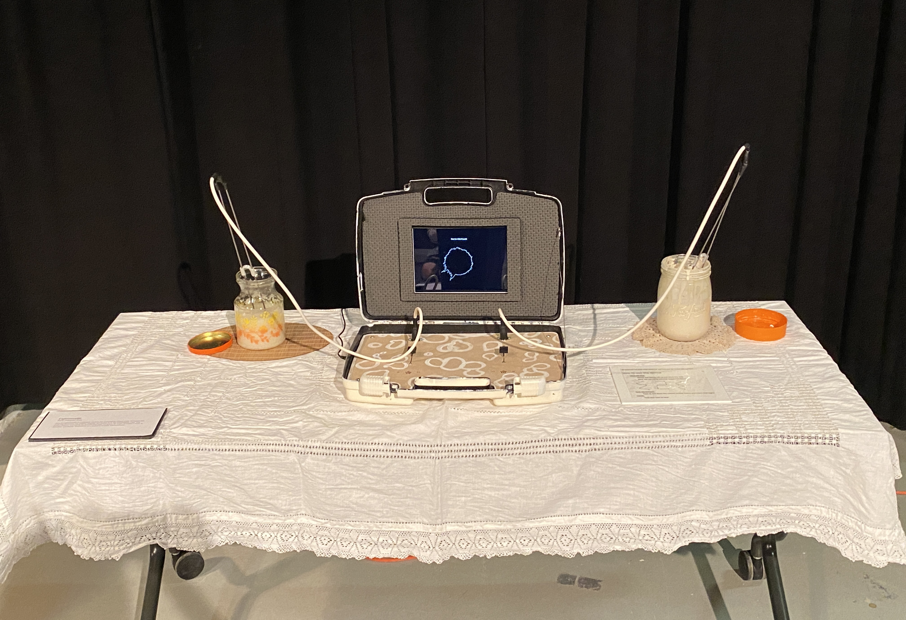
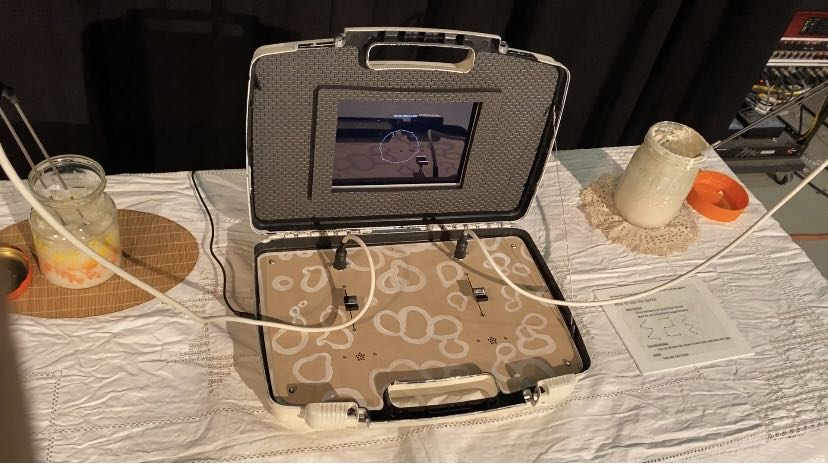
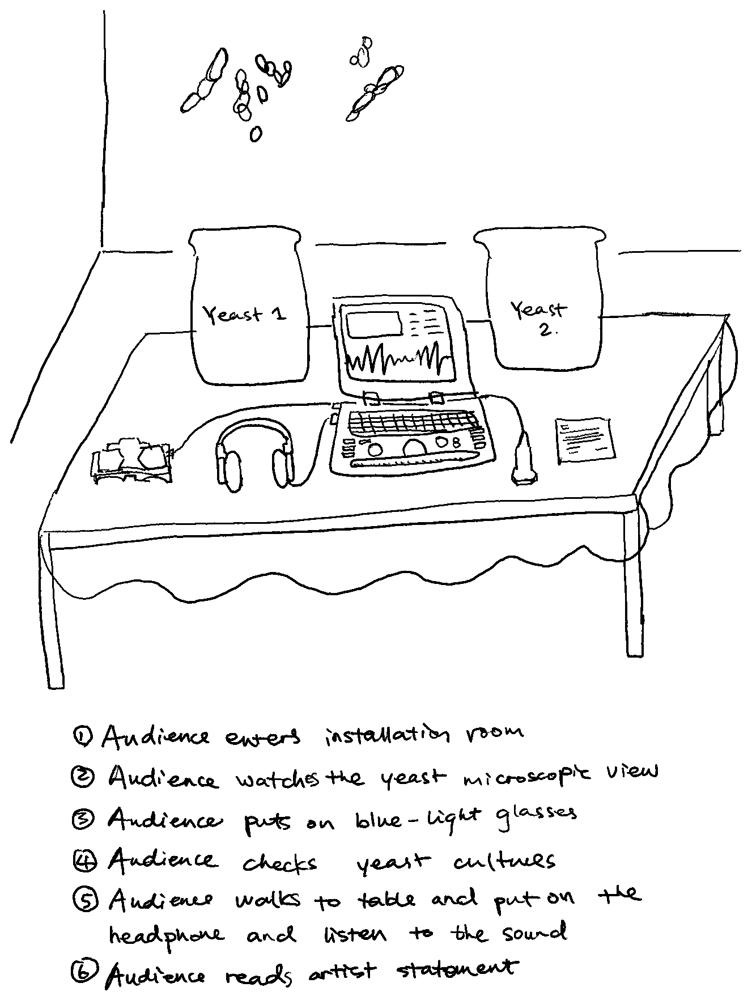
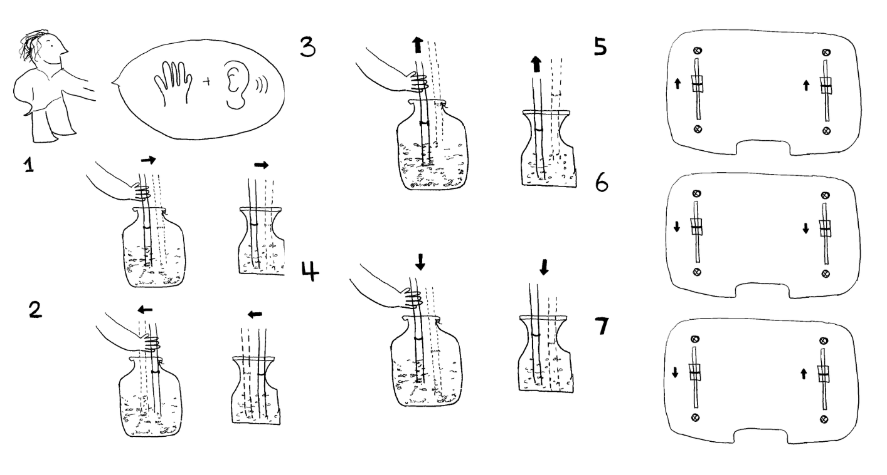

Bugzilla
2022
Bugzilla is a two player interactive retro arcade game. The game explores the mutualistic relationship between treehoppers and ants. In mutualism, each partner species benefits from the other and may fail to grow independently. Each player of Bugzilla takes on a role as an ant or a treehopper. Players venture through the woods protecting each other from predators, discovering sap and avoiding predators until the final destination is reached.
Keywords: Domestication of yeasts, intimacy and mindfulness when interacting with microbes, microbes wisdom, individualism and collectivism, magic of women's work, duality and intersectionality
   